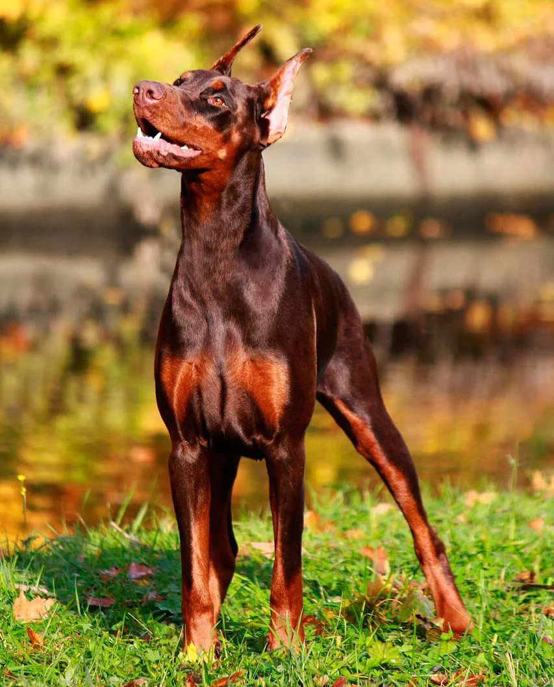

Доберма́н (нем. dobermann) — порода короткошёрстных служебных собак, выведенная в городе Апольда (Тюрингия, Германия) в конце XIX века Карлом Фридрихом Луисом Доберманом, названа в честь своего создателя
Доберманы были созданы как целенаправленно сформированная порода и формировались путём тщательной селекции. Начало этой работе положил Карл Доберман, а после его смерти работа над породой была продолжена его последователями. Сам Карл Доберман был сборщиком налогов и сотрудником немецкой полиции, и создаваемая им порода изначально формировалась как собака для полицейской службы. Помимо работы по формированию собственной породы, Доберман являлся также владельцем приюта для собак, в занятиях с которыми он оттачивал навыки по дрессуре собак и формировал систему их подготовки, которая в дальнейшем им использовалась для работ по подготовке полицейских собак. Работа над породой доберман была им начата в 1870 году. В качестве родоначальников породы были выбраны немецкие пинчеры, которых создатель породы взял в работу за их отважный и достаточно агрессивный характер. Впоследствии к ним были прилиты крови ротвейлеров, бельгийских и тюрингских овчарок, а также веймарских и других гончих. Впервые как самостоятельная порода собаки Карла Добермана были представлены на выставке 1897 года. Год спустя эта порода получила первое официальное признание. Первоначальное название породы — тюрингский пинчер — после смерти Доберманна в 1894 году было заменено на доберман-пинчер, под этим названием они и были представлены на выставке. Во время очередной редакции стандарта в 1949 году из названия породы было убрано слово «пинчер», и она стала называться просто «доберман». Первая племенная книга собак этой породы была составлена примерно тогда же, когда собаки впервые были представлены на выставке, но в дальнейшем она оказалась утеряна. Её составителем был Отто Коллер, который работал над породой вместе с Карлом Доберманом и продолжил его дело после смерти создателя породы. В России собаки породы доберман впервые появились в 1902 году, когда они были привезены специально для работы в полиции. В первое десятилетие двадцатого века работа по улучшению породы продолжилась. Тогда к этим собакам для облегчения костяка были прилиты крови грейхаундов, а для улучшения чутья к ним были прилиты крови ряда гончих собак. В книге Стэнли Корена «Интеллект собак» доберман включён в группу пород с наилучшими способностями к дрессировке. Официальное признание Немецкого кеннел-клуба эта порода получила в 1900 году. Следующей страной, которая признала эту породу, стали Соединенные Штаты Америки, где Американским кеннел-клубом она была признана в 1908 году. Вскоре после этого она была признана и Континентальным кеннел-клубом. Международная кинологическая федерация FCI признала породу доберман только в середине двадцатого века, в 1955 году.
Дополнительную информацию можно взять на странице в wikipedia